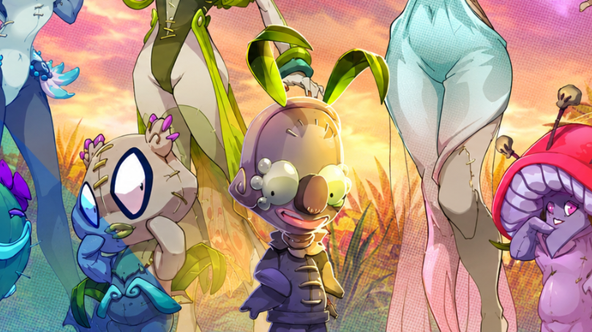
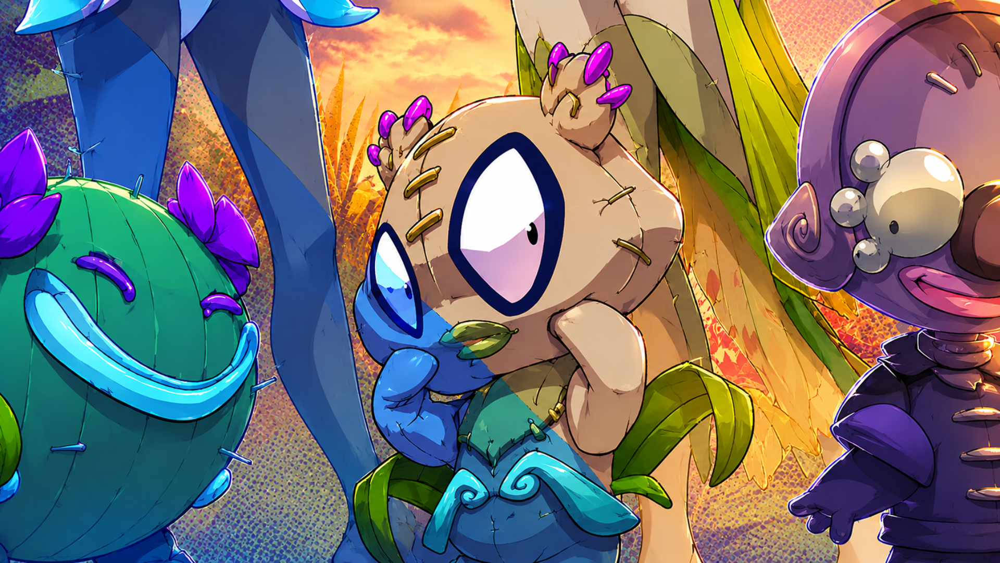
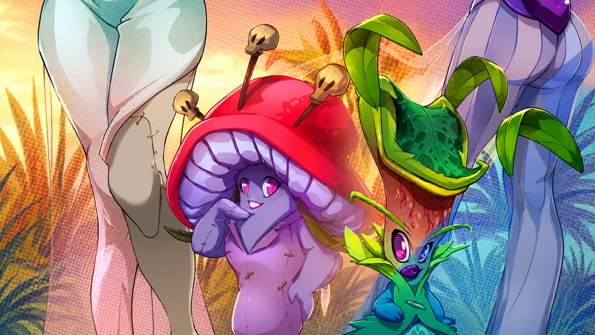
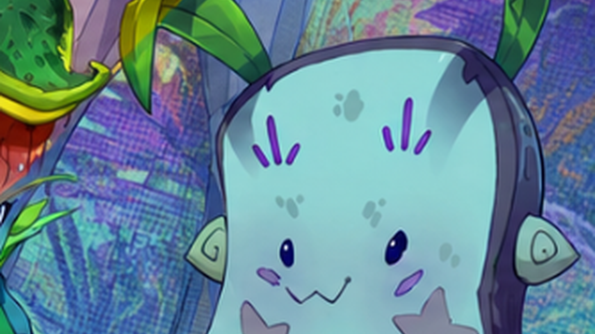
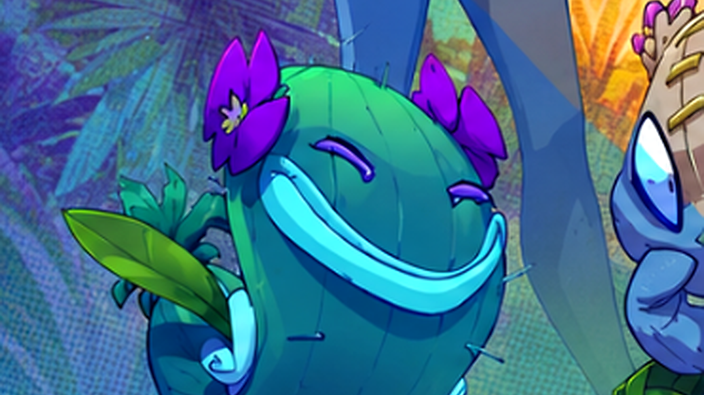
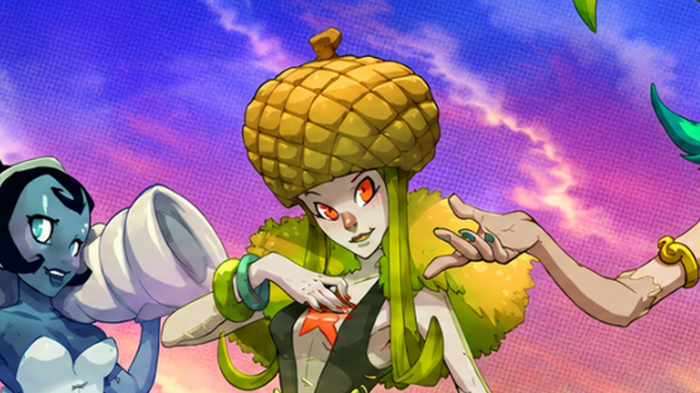

Les Poupées de Sadida sont des créatures magiques animées par le pouvoir du dieu Sadida. Elles se divisent en deux catégories distinctes : les poupées communes utilisées par les Sadidas lors de leurs combats et rituels, et les Poupées Divines, créées directement par la divinité au commencement de l'Âge des Dofus.
À la fin de l'Âge Primitif, Sadida façonna dix Poupées Divines sur les conseils de Sram et d'Enutrof. Pour leur donner vie, il utilisa des végétaux, des cœurs d'Ogrine ainsi qu'une partie de son propre pouvoir divin.
Six d'entre elles donnèrent naissance aux six Dofus Primordiaux, pondus par Aguabrial, Aerafal, Ignemikhal, Terrakourial, Dardondakal et Grougalorasalar.
Membres de ce groupe
 Dieu SadidaCréateur
Dieu SadidaCréateur

MaminalaDofus Ocre
LophapharoPoupée Divine
BellodanaDofus Ébène
PepavaraPoupée Divine
YôpoConteuse LadysallyDofus Pourpre
LadysallyDofus Pourpre

IbagoDofus Ivoire LacrimaPoupée Divine
LacrimaPoupée Divine
 RazerianeDofus Émeraude
RazerianeDofus Émeraude
 DathuraPoupée Divine
DathuraPoupée Divine
 AguabrialDofus Turquoise
AguabrialDofus Turquoise
 AerafalDofus Émeraude
AerafalDofus Émeraude
 IgnemikhalDofus Pourpre
IgnemikhalDofus Pourpre
 TerrakourialDofus Ocre
TerrakourialDofus Ocre
 DardondakalDofus Ivoire
DardondakalDofus Ivoire
 GrougalorasalarDofus Ébène
GrougalorasalarDofus Ébène
 OtomaïDécouvreur
OtomaïDécouvreur
 OgrestChaos d'Ogrest
OgrestChaos d'Ogrest